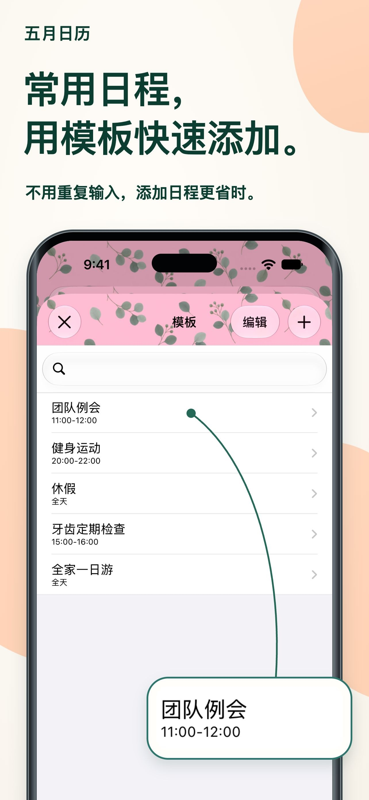

外观也能随心调整。
组合主题颜色、日程背景和图案，打造自己的日历。
每天，都看得更清楚。
长日程名称也能直接在月视图中阅读。文字和颜色随你调整，让每天的安排一目了然。
适用于 iPhone 和 iPad在 App Store 查看免费下载 · 提供 App 内购买
查看日程，也可以更轻松。
工作和生活，在同一个地方看清每天的安排。为你的每一天而设计
让日历适应你的规划方式。
长日程名称自动换行。调整字体和字号，既能查看整个月，也能读清日程详情。
保存日历组合，一键切换工作和个人日程，查看此刻需要的安排。
将会议、运动、就诊等日程保存为模板。轻点两下日期，再选择模板即可添加日程。

小细节，让使用更舒适
组合主题颜色、日程背景和图案，打造自己的日历。
提供20种小组件，还包括 iPad 专用小组件。
仅显示与输入文字匹配的日程，专注查看需要的安排。
常见问题
应用可免费下载，并提供 App 内购买。当前价格和购买选项请查看 App Store。 在 App Store 查看
支持 iPhone 和 iPad，部分小组件仅适用于 iPad。最新系统要求请查看 App Store。
支持显示提醒事项、节假日、周数和农历信息。也可设置每周开始日及时间区。
通知由 Apple 的“日历”应用发送。你可以在日程开始前或结束前设置提醒。
让每一天更清晰
从今天开始，使用适合自己的日历。